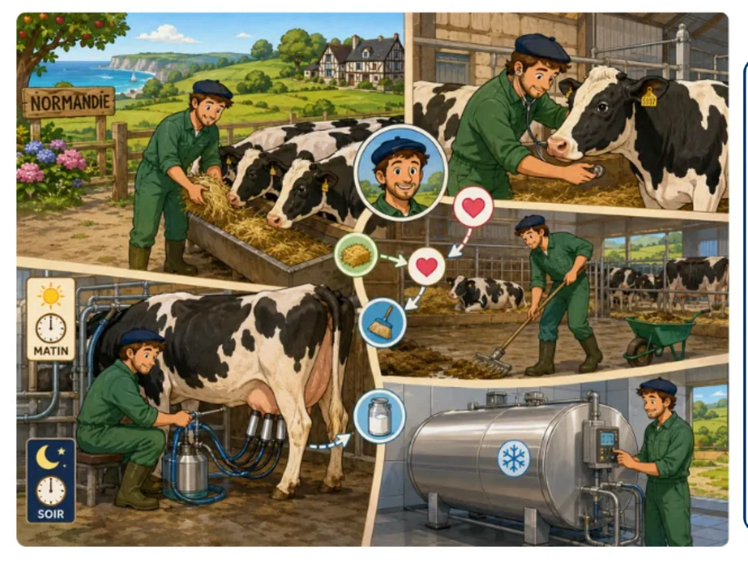
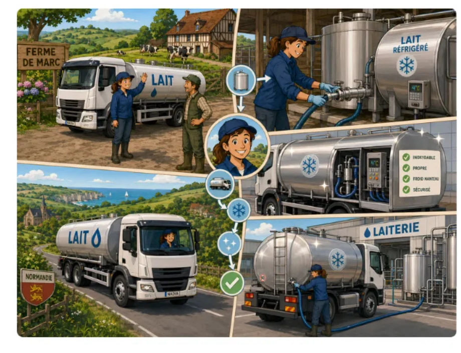
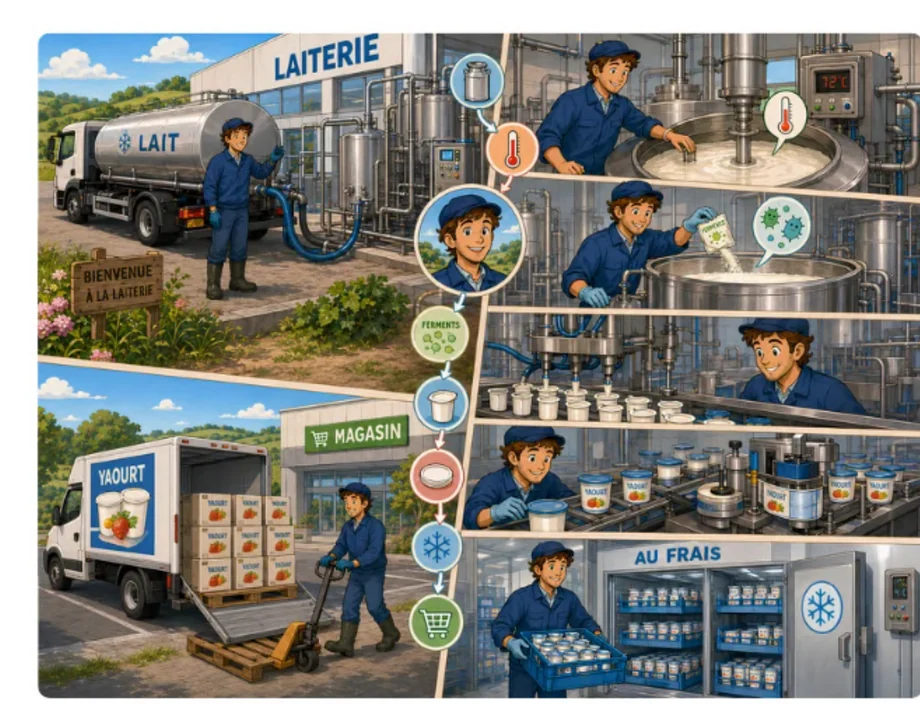
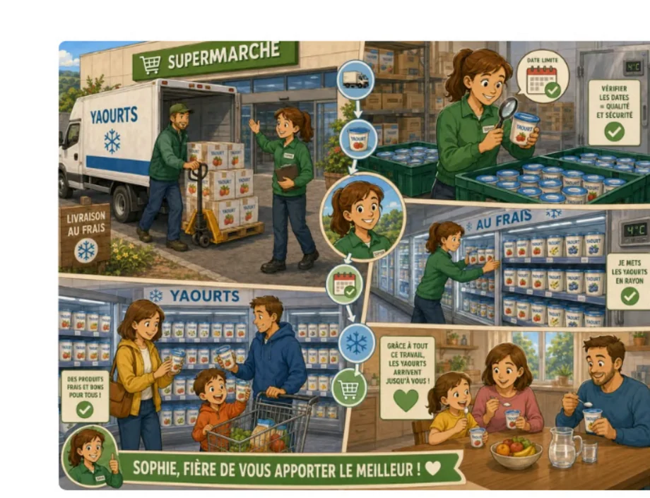

Marc - éleveur de vaches laitières
Chaque jour, il nourrit ses vaches, vérifie leur santé et nettoie leur espace. Deux fois par jour, il fait la traite. Le lait est ensuite stocké dans un grand réservoir réfrigéré pour rester frais et propre.

Nadia - conductrice de camion-citerne
Elle vient chercher le lait à la ferme de Marc. Son camion le maintient à une température froide pour éviter qu’il ne s’abîme, puis elle le transporte jusqu’à la laiterie.

Julien - employé de la laiterie
À la laiterie, le lait est transformé en yaourt : il est chauffé, on ajoute des ferments, puis le yaourt est mis en pots, fermé, étiqueté et stocké au frais avant l’envoi.

Sophie - employée du supermarché
Elle reçoit les yaourts, les met en rayon dans les réfrigérateurs et vérifie les dates de péremption.